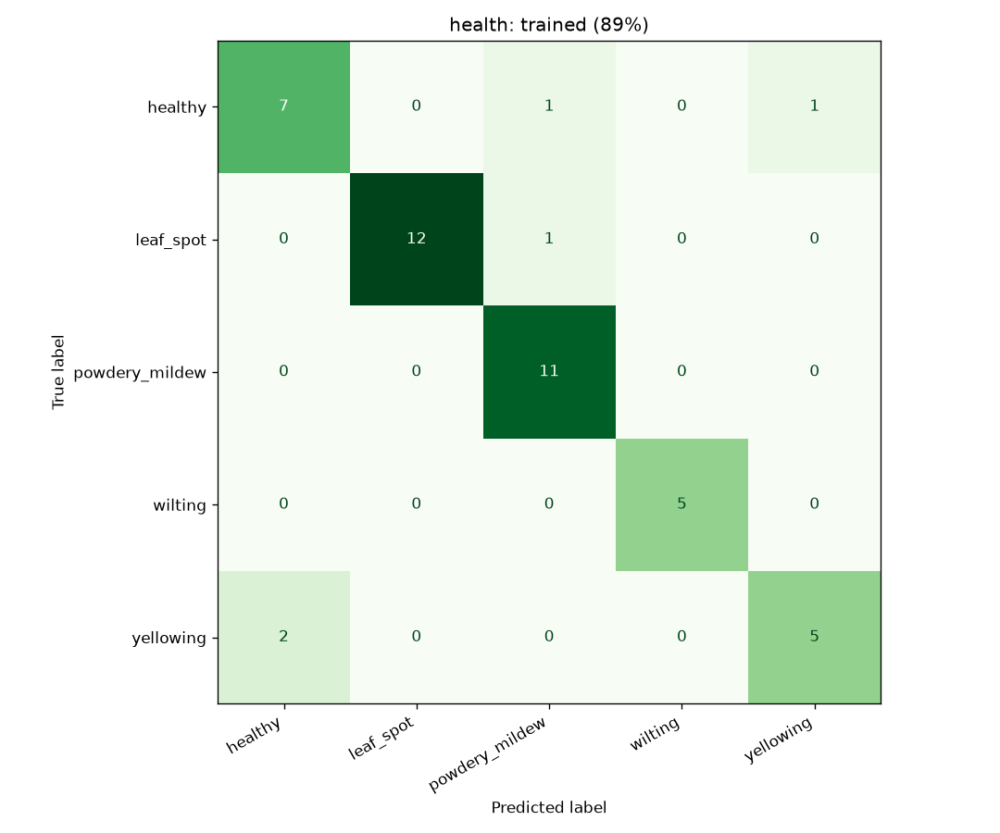
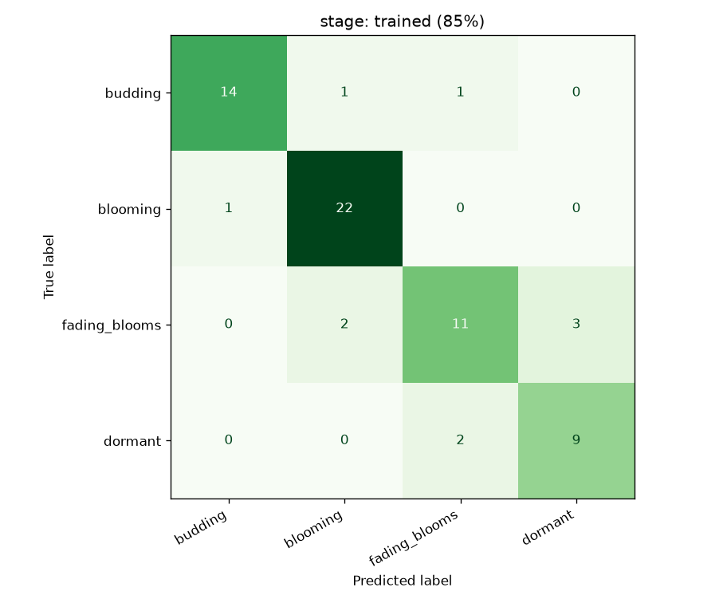

Evaluation
How accurate is it?
We tested the photo model on a hand-checked set of freely licensed photos from Wikimedia Commons. This page shows the numbers, the size of the test, and the limits.
Summary
| Question | Photos | Untrained model | Trained on our photos* | Random guessing |
|---|---|---|---|---|
| Growth stage (4 classes) | 66 | 64% | 85% 95% range 74–92% | 35% |
| Health (5 classes) | 45 | 49% | 89% 95% range 77–95% | 29% |
* Cross-validated: every photo was scored by a model that never saw it, and photos were never split across training and testing. "Random guessing" means always answering the most common class.
What the test set contains
| Question | Class | Photos |
|---|---|---|
| Stage | Blooming | 23 |
| Budding | 16 | |
| Fading blooms | 16 | |
| Dormant | 11 | |
| Health | Leaf spot | 13 |
| Powdery mildew | 11 | |
| Healthy | 9 | |
| Yellowing | 7 | |
| Wilting | 5 |
We started from 225 photos found by keyword search. Many were wrong: scanned single leaves, book pages, autumn maple trees. We looked at every photo and kept only those that show what the label says. Some were moved to the class they actually show. We chose photos before seeing any model score.
Where it goes wrong


Limits you should know
- Small test. 45 and 66 photos. A single photo moves the result by 1–2 points. The ranges above show the real uncertainty.
- Wilting has only 5 photos. Its result is close to anecdotal.
- Not a garden test. Wikimedia photos are often well framed. Phone photos in a garden are harder, so expect lower accuracy there.
- Curated by hand. Removing bad photos makes the test cleaner, and also easier. The earlier unfiltered run scored 70% on health and 76% on stage.
- Advice, not diagnosis. When the model is unsure the app says so and asks for another photo.
Next
Labelled photos from real gardens, checked by a gardener, are the next step. They will let us report a number that matches how the app is used.
The code, the curation list and the photo credits are in the open repository.